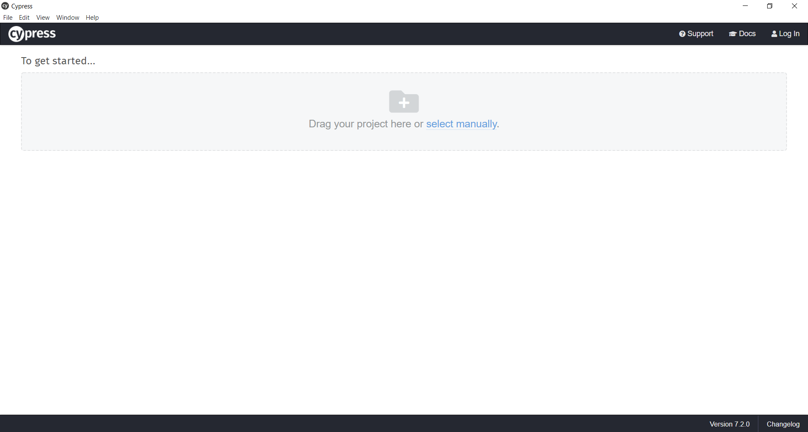
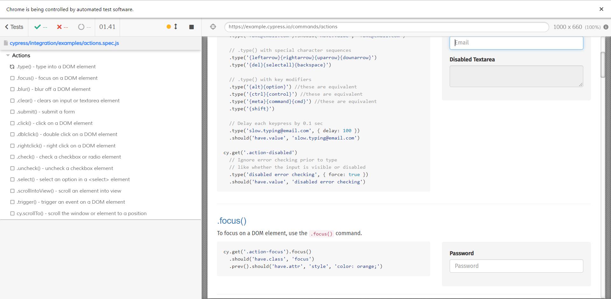
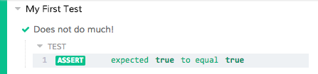

Уеб тестването е една от най-важните части от разработката на уеб приложения.
С повишаването на изискванията за бързо пускане на пазара, нуждата от стабилни инструменти за
автоматизирано тестване
се увеличава всеки ден. Съществуват множество различни инструменти с отворен код, които целят да улеснят
процеса
на създаване на уеб приложения. Cypress е един от тези инструменти, които бързо са утвърдили своето
място и е сред
популярните при уеб интеграция и end-to-end автоматизирано тестване на потребителския интерфейс. Може да
се използва и за модулно тестване, но това е по-рядко срещаната му употреба.
Инструментът е насочен главно към използване от разработчици и QA инженери и цели разрешаване на
проблеми като синхронизация,
неконсистентни тестове и много други.
Cypress е изграден върху Node.js и се предлага като npm модул (което прави инсталирането и използването
му доста бързо),
като използва JavaScript за писане на тестовете. Това не трябва да ни притеснява, тъй като 90% от кода
може да бъде написан
с помощта на вградени команди, които са лесни за разбиране. Инструментът се комбинира и с jQuery
(JavaScript библиотека)
и наследява много от методите ѝ, което допълнително улеснява използването му.
Характеристики:
Бързо, последователно и надеждно изпълнение на тестовете
Работи директно в браузъра
Изчакване на команди с цел отстраняване на проблеми с асинхронизирането
Възможност за тестване на крайни случаи чрез манипулация на отговора на сървъра
Записване на всяка стъпка от изпълнението на команда в команден дневник
Преглеждане на видеоклипове от изпълнението на всички тестове
Недостатъци:
Не може да се пишат тестове на C#, Java и други езици, различни от JavaScript
Не може да изпълнява тестове за 2 или повече раздела едновременно
Не може да бъде използван за мобилни приложения
7 ПРИЧИНИ ДА ИЗБЕРЕМ CYPRESS
Cypress не използва Selenium
Голяма част от end-to-end инструментите за тестване са базирани на Selenium. Това е и причината,
поради
която всички споделят еднакви проблеми. За да бъде Cypress различен от тях, неговата архитектура е
изградена от нулата. Докато Selenium изпълнява команди дистанционно през мрежата, Cypress ги
изпълнява в
същия цикъл, в който се изпълнява и тестваното приложение.
Cypress се фокусира върху правенето на добро end-to-end тестване
Cypress не е нито framework за автоматизация, нито за модулно тестване на back-end услуги, тъй като
вече
съществуват страхотни инструменти, които вършат тази работа. Cypress е по-скоро специализиран в едно
нещо – създаване на страхотно изживяване по време на писането на “end-to-end” тестове за уеб
приложения.
Cypress работи на всеки front-end framework или уебсайт
Cypress тества всичко, което работи в един уеб браузър. Цялата архитектура, обхващаща Cypress е
изградена с цел да се справя изключително добре с всеки съвременен JavaScript framework.
Инструментът
работи също толкова добре и с по-стари сървърни страници и приложения.
Cypress тестовете се пишат само на JavaScript
Въпреки че всеки друг език може да бъде компилиран до JavaScript, кодът винаги се изпълнява в самия
браузър. В Cypress няма обвързване с различни езици или драйвери – има и винаги ще има само
JavaScript.
Cypress е всичко в едно
Писането на end-to-end тестове изисква използването на много различни инструменти заедно. Със
Cypress получаваме много инструменти в един – няма да има нужда да инсталираме 10 отделни
инструмента и библиотеки, за да подготвим тестовия пакет. В Cypress се съдържат функциите на някои
от най-добрите инструменти (Mocha, Chai, Sinon.JS и т.н.), които безпроблемно работят заедно.
Фиг.1 End-to-end тестването преди и след Cypress
Cypress е за разработчици и за QA инженери
Една от главните цели на Cypress е да превърне разработването чрез тестване в реалност за end-to-end
тестването. Cypress се представя най-добре, когато се използва по време на създаването на
приложението, което позволява писането на код да стане възможно най-бързо.
Cypress работи много, много по-бързо
Архитектурните подобрения отключват възможността за правене на разработване чрез тестване с цялостни
end-to-end тестове за първи път. Cypress е изграден така, че тестването и разработването могат да се
извършват едновременно. Cypress дава възможността за по-бърза разработка, докато целият процес се
управлява с тестове, защото:
можем да визуализираме приложението
имаме достъп до всички инструменти за разработка
промените се отразяват в реално време
Крайният резултат е по-бърза разработка, по-добър код и изчерпателно тестване.
ТЕСТВАНЕ СЪС CYPRESS
В този раздел ще откриете как се прави един примерен тест със Cypress, разгледан малко по-подробно - от
инсталирането на инструмента до кода на самия тест.
Инсталиране
Има множество начини за инсталиране на инструмента. Първият от тях е чрез npm (мениджър на пакети за
JavaScript) и следната команда в терминала:
npm install cypress
Код 1. Инсталиране чрез npm
Вторият вариант е чрез yarn – друг мениджър на пакети. Инсталацията чрез него отново става с една
команда:
yarn add cypress
Код 2. Инсталиране чрез yarn
Ако нямате инсталиран нито един от тези мениджъри, можете да инсталирате Cypress по най-класическия
начин – чрез директно изтегляне на архива с инсталационни файлове от
тук.
Отваряне
Ако сте използвали npm за инсталирането, Cypress се намира във вашата ./node_modules директория и
може да бъде отворен със следната команда:
./node_modules/.bin/cypress open
Код 3. Отваряне чрез npm
Друг вариант е да използваме npx (package runner за npm), който е включен във версиите на npm след
5.2, а може да бъде инсталиран и отделно:
npx cypress open
Код 4. Отваряне чрез npx
Ако Cypress е инсталиран чрез yarn, може да бъде отворен по следния начин:
yarn run cypress open
Код 5. Отваряне чрез yarn
В случай, че сте избрали да изтеглите директно архива с файлове, просто отворете Cypress.exe и ще
видите следният екран:

Фиг.2 Начален екран на Cypress
Показване на примерни тестове
Когато отворим проект със Cypress за първи път, инструментът автоматично създава няколко примерни
теста, които демонстрират част от възможностите му:
Фиг.3 Списък със създадените примерни тестове
При отваряне на всеки един от тестовете, той автоматично започва да се изпълнява. Виждаме списък с
команди (или т.нар. “Command Log”), които се стартират последователно, както и каква част от тях са
изпълнени успешно. Ние можем да използваме част от тях, да ги променяме, добавяме и изтриваме:

Фиг.4 Списък с команди на примерен тест
Пробен тест
Все още не знаем нищо за писането на тестове със Cypress, но вече знаем как се изпълняват. Ще
напишем първия си тест, като създадем файла sample.spec.js в любимото си IDE:
describe('My First Test', () => {
it('Does not do much!', () => {
expect(true).to.equal(true)
})
})
Код 6. Създаване на sample.spec.js
Когато запазим нашия файл и го отворим със Cypress, би трябвало да видим как браузърът се
презарежда. Когато го отворим и изпълним, вече ще имаме първия си успешен тест! (Може да не прави
нищо полезно, но поне е успешен):

Фиг.5 Първи успешен тест
Ако искаме да видим как изглежда един неуспешен тест (за първи и последен път, надяваме се), можем
просто да сменим на третия ред стойността в equal на false, получавайки следния резултат:
Фиг.6 Първи неуспешен тест
Както вече видяхме в предходната стъпка, Cypress предоставя страхотна визуализация на тестове,
команди, заявки и много други, като показва и броят на преминатите успешно и неуспешно тестове. Това
е изключително удобно при големи проекти, тъй като лесно може да се групират, преглеждат и
визуализират тестове, което позволява и бързи промени в кода, ако са необходими.
Първи (истински) тест
За да напишем един тест, трябва да имаме уеб страница, която да тестваме. За наше улеснение, Cypress
има вграден набор от примерни уеб приложения. За целта ще използваме уеб приложението „Kitchen
Sink“, което е един от тези примери.
На мястото на предишния разгледан пример, вече можем да напишем следния код, който подава адреса на
командата cy.visit():
describe('My First Test', () => {
it('Visits the Kitchen Sink', () => {
cy.visit('https://example.cypress.io')
})
})
Код 7. Демонстрация на cy.visit()
Командата е записана в “Command Log” и е изпълнена успешно. Вече имаме отворена страница и е крайно
време да направим нещо в нея. Нека проверим дали в някой елемент от страницата се съдържа думата
“type”. За тази цел използваме командата cy.contains():
describe('My First Test', () => {
it('finds the content "type"', () => {
cy.visit('https://example.cypress.io')
cy.contains('type')
})
})
Код 8. Демонстрация на cy.contains()
След като сме открили линка, който съдържа търсената дума, ще се опитаме да го отворим. Към вече
съществуващата команда от предходния пример, добавяме и командата .click():
describe('My First Test', () => {
it('clicks the link "type"', () => {
cy.visit('https://example.cypress.io')
cy.contains('type').click()
})
})
Код 9. Демонстрация на .click()
В Cypress това добавяне на команди към команди се нарича “chaining” – командите образуват „верига“,
която по лесен за разбиране начин показва какво точно прави нашият тест.
Нека сега да проверим дали съдържанието на даден елемент е такова, каквото искаме да бъде. За тази
цел трябва да направим “assertion” – вид команда, която проверява зададено условие и ако то не е
изпълнено, тестването се прекратява. Да напишем команда, която взима текущия адрес и да добавим към
нея assert команда, която проверява дали това е адреса, който очакваме да видим:
describe('My First Test', () => {
it('clicking "type" navigates to a new url', () => {
cy.visit('https://example.cypress.io')
cy.contains('type').click()
// Should be on a new URL which includes '/commands/actions'
cy.url().should('include', '/commands/actions')
})
})
Код 10. Демонстрация на команда от вид "assertion"
Последните 3 функции, които ще добавим към нашия тест са:
cy.get() – използва се за избиране на елемент по CSS клас
cy.type() – въвежда текст в избрано поле
cy.should() – проверява дали съдържанието на даден елемент съвпада със съдържанието, подадено
като параметър на командата
describe('My First Test', () => {
it('Gets, types and asserts', () => {
cy.visit('https://example.cypress.io')
cy.contains('type').click()
// Should be on a new URL which includes '/commands/actions'
cy.url().should('include', '/commands/actions')
// Get an input, type into it and verify that the value has been updated
cy.get('.action-email')
.type('fake@email.com')
.should('have.value', 'fake@email.com')
})
})
Код 11. Първи успешен тест със Cypress
Вече можем да кажем, че успешно сме написали първия си тест със Cypress, който отваря уеб страница,
намира и кликва върху линк, верифицира URL, както и поведението на елемент от страницата при подадени
стойности.
CYPRESS VS SELENIUM
Инсталиране
Всичко, което трябва да направим, за да отворим Cypress е да инсталираме .exe файла – след това вече
имаме всички необходими драйвери, за да подкараме първия си тест. Със Selenium обаче е малко
по-сложно и подготовката отнема малко повече време. Selenium е библиотека, която изисква framework
за работа с нея, докато Cypress предоставя всичко за изпълнението на автоматични тестове.
Поддържани езици
Едно от предимствата на Selenium пред Cypress е фактът, че поддържа повечето популярни езици за
програмиране като Java, Perl, PHP, Python, Ruby и C#, докато Cypress поддържа само JavaScript.
Синтаксис
Както вече знаем, Cypress използва Mocha и Chai, което е страхотно, ако вече сме работили с
JavaScript и лесно можем да започнем да работим с този инструмент. Ако сме по-добре запознати с
другите езици обаче, би било доста по-сложно – тогава може би по-подходящият вариант е Selenium, тъй
като той поддържа множество езици.
Заплащане
И двата инструмента са с отворен код и повечето им функционалности могат да бъдат използвани напълно
безплатно. Предлагат също и различни абонаментни планове, в зависимост от инструментите, с които
могат да бъдат интегрирани.
Поддържани браузъри
Според официалния сайт на Cypress, това са браузърите, които той поддържа:
Canary
Chrome
Chromium
Edge
Edge Beta
Edge Canary
Edge Dev
Electron
Firefox
Firefox Developer Edition
Firefox Nightly
За съжаление инструментът не поддържа Safari и Internet Explorer (за разлика от Selenium, който поддържа
и тях), но се очаква това да стане в близкото бъдеще.
В заключение, Cypress е страхотен вариант за екипи, които разработват основно с JavaScript. Като
инструмент, направен от разработчици за разработчици, Cypress е по-скоро начин за въвеждане в
автоматизираното тестване, отколкото заместител на Selenium. Cypress е идеално приложение за end-to-end
тестване на уеб приложения, което позволява автоматизираното тестване на всичко, което може да се отвори
в браузър.